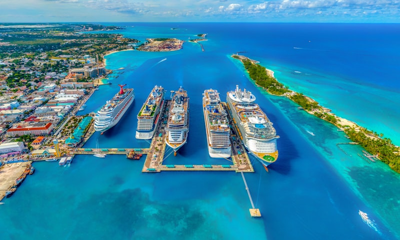

⏱ 0 — כבר על הספינה
יום בים
אין נמל — כל היום על Legend of the Seas. הזדמנות למנוחה, מים, מופעים ואוכל בלי תורים בחוף.
יום זהב לאיפוס אנרגיה — עם שני סלוטים קבועים בבוקר/צהריים.
מדריך החופשה · רומא · Legend of the Seas · 14–25 בספטמבר 2026
שבת · יום 3 בשייט · איפוס + הזמנות קבועות

אין נמל — כל היום על Legend of the Seas. הזדמנות למנוחה, מים, מופעים ואוכל בלי תורים בחוף.
יום זהב לאיפוס אנרגיה — עם שני סלוטים קבועים בבוקר/צהריים.
| אפשרות | מה כולל | עלות משוערת ליום (משפחה ×4) |
|---|---|---|
| A ★ | לו״ז קבוע + בריכות/מופע אחה״צ | €0–40 תוספת ביום (Crown Edge + Izumi שולמו מראש · אחה״צ כלול) |
| B | כמו A + ערב מופע מוקדם / מנוחה בחדר | €0–40 תוספת ביום (כמו A · מופע כלול) |
| C | ספא למבוגרים אחרי Izumi (ילדים במועדון/חדר) | €80–250 תוספת ספא (מעבר ל־Crown Edge + Izumi ששולמו) |
מחירים משוערים באירו ליום שלם למשפחה — לא כוללים טיסות/מלון/חבילת השייט עצמה, אלא מה שמשלמים באותו יום לפי האפשרות. לעדכון לפני הנסיעה.